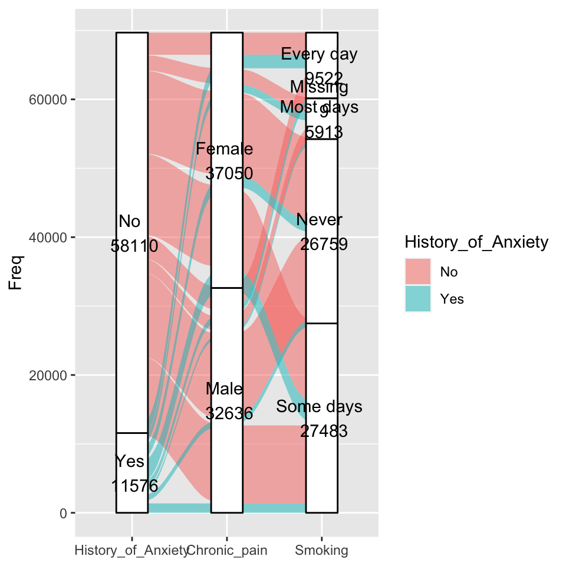
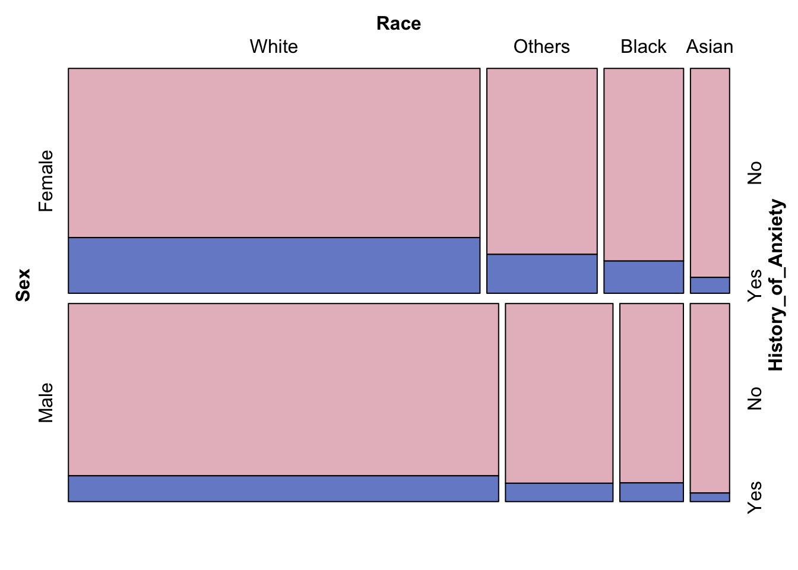
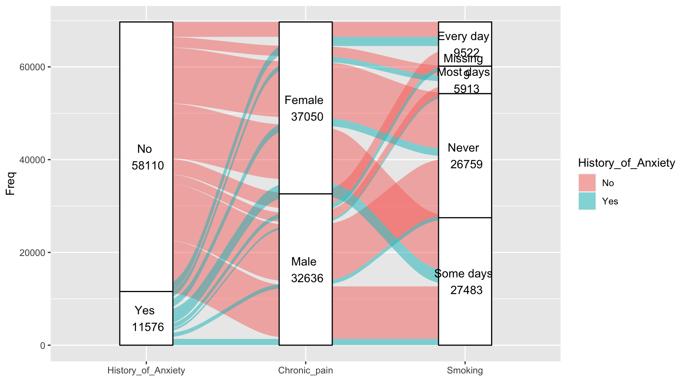
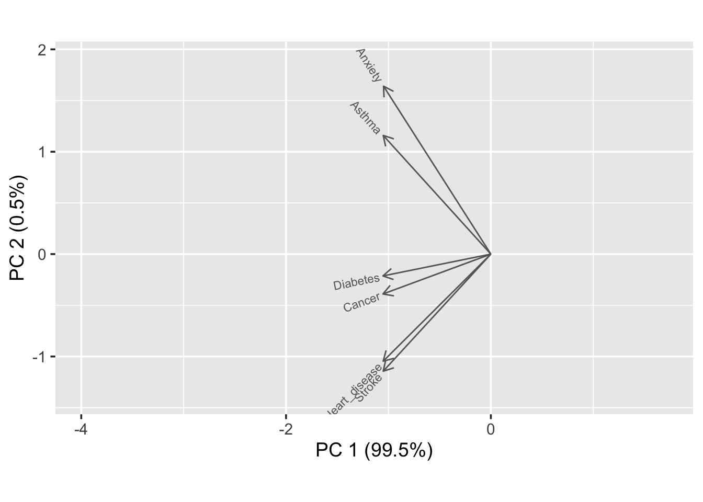
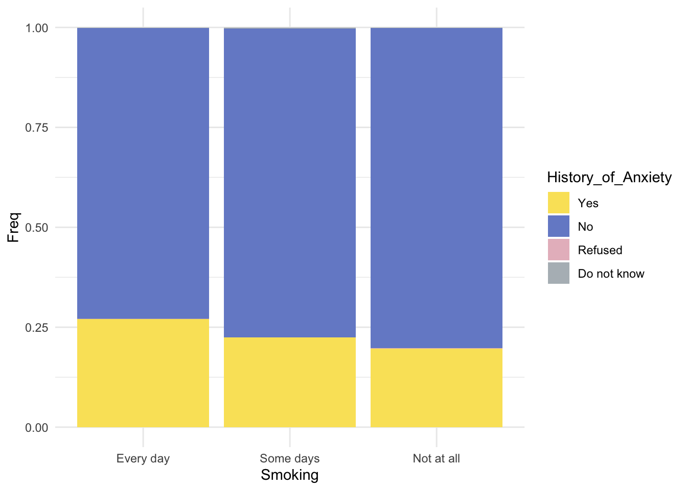
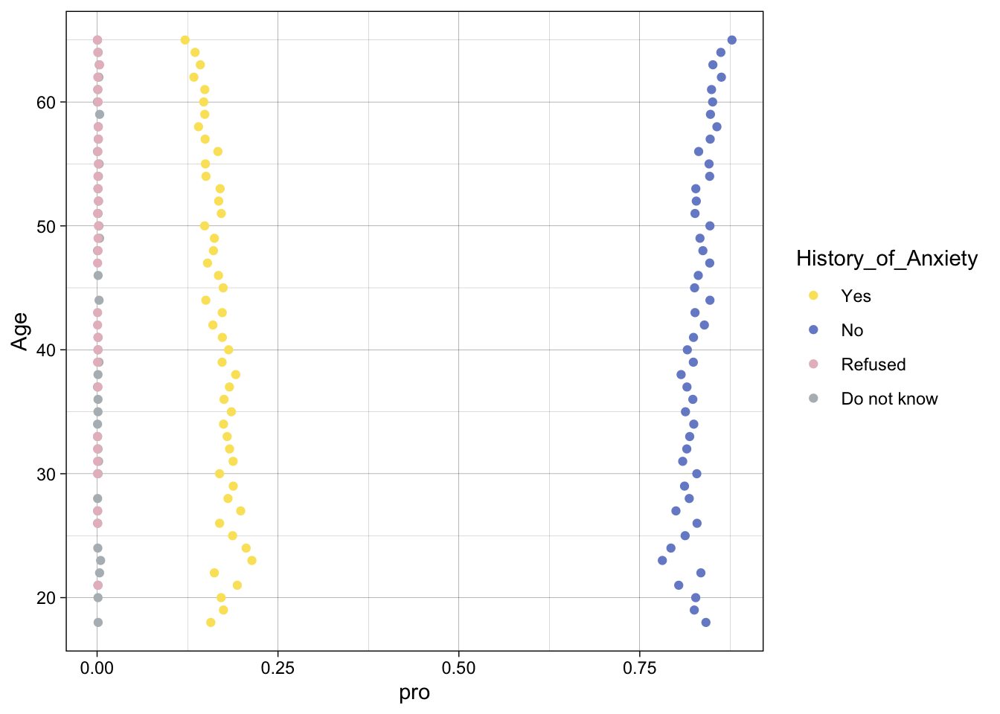
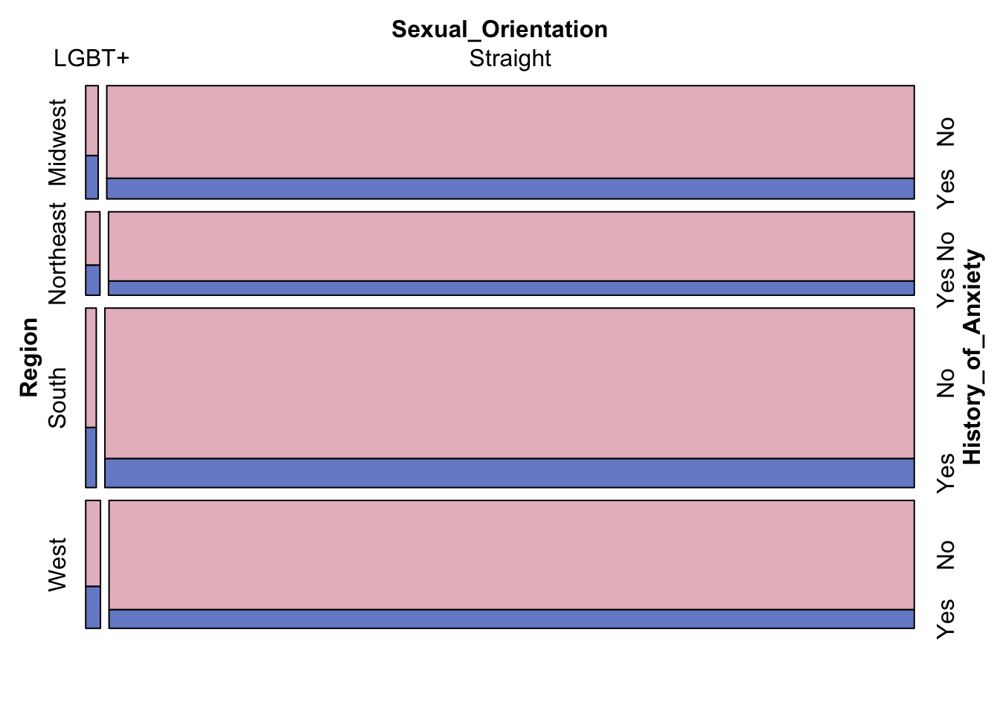

Chapter 4 Results
4.1 Female vs Male, which group are more sensitive to anxiety?

Since the population interviewed each year was not a fixed group of people, we have no way of knowing whether the same group of people had a change in their mental health during those years. However, according to the graph above, the percentage of interviewees with history of anxiety has increased yearly—both the percentage of males and females. On the male side, we can see that the increase is relatively small, but there is no sign of a decrease. On the female side, we can see a significant increase from 2018 to 2019, which is almost 50% of those with history of anxiety in 2018. Such increase continues each year slowly after that, and almost 25% of women are having history of anxiety by 2021. In summary, the proportion of women with history of anxiety is greater than that of men, with both indicates signs of continue increase.
4.2 Anxiety and Identity: The Intersection of Race and Sex

Anxiety among different genders still follows the pattern from the first plot, with females showing higher correlation with history of anxiety than males. However, if breaking down the data by race, we can see that females in the “other” category show a higher rate of anxiety than Black and Asian females, compared to males, which is interesting to find out.
4.3 The Burden of Chronic Pain: Exploring the Prevalence and Impact of Chronic Pain among sex

Chronic pain is defined as pain that persists for more than three months and cannot be easily explained by any underlying medical condition. It can be caused by a variety of factors, including injuries, illnesses, and surgery. Chronic pain can have a significant impact on a person’s physical and mental health, and can lead to a decreased quality of life. This graph is consistent with previous plots, which has found that women are more likely to experience chronic pain than men. Additionally, the graph shows that women are more likely to experience anxiety and chronic pain simultaneously. Overall, this graph highlights the importance of addressing anxiety and chronic pain in women, as they are more likely to experience these conditions.
4.4 Anxiety vs Other Diseases: similarity in color patterns

In the above five plots, we tried to find the proportion of responses for other diseases. The x-axis represents the population’s responses to the history of Anxiety breaking down by other diseases. The y-axis corresponds to the responses for other physical diseases. For example, the first graph contains information regarding history of anxiety and history of heart disease; among those who had history of anxiety, more than 75% chose no in history of heart disease, which means more than 75% of people do not have heart disease.
After comparing Anxiety with other diseases, we can see that the percentage of people who answered yes to both asthma and a history of Anxiety is the highest among the five diseases, which can indicate a more positive relationship between the two compared to others. It’s also interesting to find out that all five physical diseases shown similar patterns by looking at the color. One possible reason can be people with other physical diseases might be affected by the concern of such disease therefore become anxious about their wellness.
4.5 Deeper dive into relationship between anxiety and physical diseases

The loading plots include vectors for each disease, including anxiety. We note that the vectors for anxiety disorders and asthma patients are relatively close. From our study of the biplot, we know that forming a small angle means that the two variables are positively correlated. Combining this with our findings in the previous heatmap, there is a link between anxiety and asthma. Second, we can also note that the angle between the history of anxiety and other disorders is between 75 and 100 degrees, which means they are not likely to be correlated.
4.6 Geographic Link Between Diabetes and Anxiety

Diabetes is a chronic condition in which the body is unable to properly regulate blood sugar levels. This can lead to a range of complications, including damage to the heart, blood vessels, nerves, and kidneys. The plot you are referring to suggests that there might be a higher prevalence of diabetes in the southern region of the United States, and that people in this region are also more likely to experience anxiety.There are several potential reasons for this correlation. One possible explanation is that people who live in the southern region of the US may have different lifestyles and dietary habits that contribute to the development of diabetes and anxiety. For example, southern cuisine often includes high-fat and high-calorie dishes, which can increase the risk of obesity and related conditions.
4.7 Are elderly people less anxious about their life?

The proportion of history of anxiety is relatively even across all ages. It remains below 25 percent. However, it is easy to see from the graph that the older the age, the lower the proportion. By age 65, the percentage had dropped to less than 12 percent. The prevalence of history of anxiety in 23- and 24-year-olds is a little higher than other age groups. Young people also shows sign of slightly higher variance compared other age groups in history of anxiety as well.
4.8 Why smoking? Anxiety with frequency of smoking habits.

According to our perceptions, smoking is a form of stress relief for some people who have just started smoking. Many smokers experience relief from anxiety after smoking. But is this true? The chart above divides the population into smokers and non-smokers and compares whether they have ever suffered from anxiety. About 27 percent of occasional smokers indicates a history of anxiety. About 22 percent of occasional smokers indicates a history of anxiety. About 19% of the never smokers indicate a history of anxiety. Looking at the graph, we can conclude that smokers are at least eight percent more likely to have anxiety disorders than non-smokers. We are not sure the causal relationship between smoking and anxiety, but it seems like a positive relationship exists between frequency of smoking and history of anxiety.
4.9 Happier Work and Marriage: The Key to Reducing Anxiety?
Mosaic plots are used for visualizing data from two or more qualitative variables to show their proportions or associations. Based on the plot above, we can see that people who are unmarried and unemployed are more likely to have Anxiety than other people. At the same time, people who are unemployed have slightly higher chance to be unmarried. Moreover, mosaic plot can also help check the independence of variables in dataset. Looking at the graph, we can see that the variables are possibly not independent to each other; there is no clear sign of “+” between each block.
4.10 Geography and the LGBT+ Community: Variations in Anxiety Risk

Based on the plot, we can see that there is a lower concentration of LGBT+ individuals living in the southern and midwestern regions of the United States compared to other parts of the country. This may be due to a variety of factors, such as a lack of supportive communities or discrimination. However, the data also suggests that those who do live in the south and midwest are more likely to experience anxiety than those living in other regions. This could be a result of the challenges and barriers that they face in these areas, such as a lack of acceptance and support. Overall, this suggests that location can play a significant role in the mental health and well-being of LGBT+ individuals.
Summary:
We found that not all the factors we think of related to history of anxiety initially shown signs of correlation. In fact, from the loading plots, it’s interesting to find out only history of asthma are highly correlated with history of anxiety, others are less relevant by around 90 degrees of angle formed. Different age groups don’t indicate a huge difference in percent of anxiety as well. In conclusion, identity factors such as sex, sexual orientation, and social factors such as employment and marital status shown higher correlations with history of anxiety, others relationship remained in question and further testing.